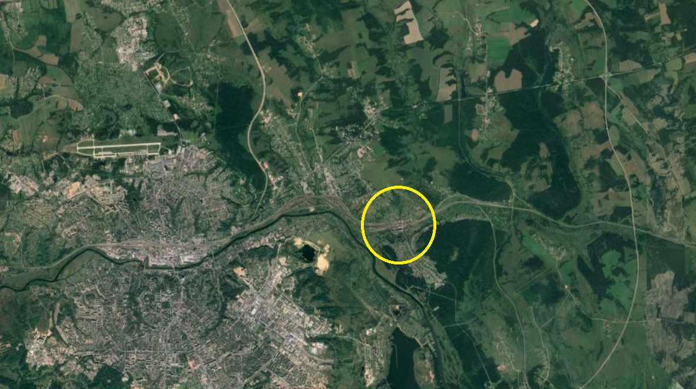
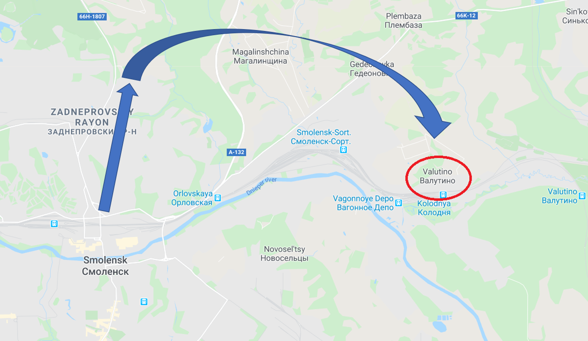
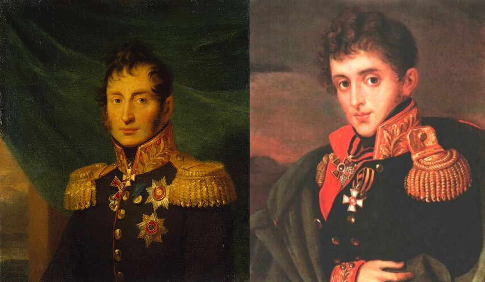
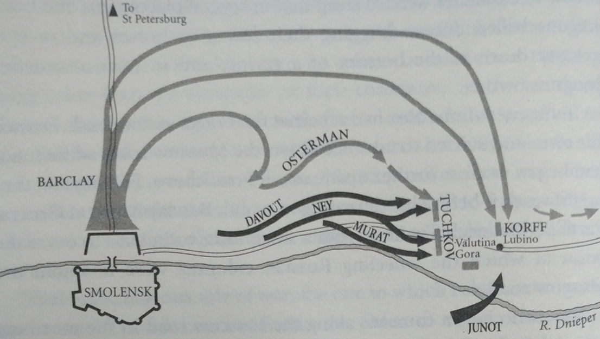

쥐노, 러시아군을 구해내다 - 스몰렌스크 전투 (6)
게시: 2020-04-27T06:30:58+09:00
바클레이는 8월 17~18일에 벌어진 스몰렌스크 전투 동안 프랑스군이 강 북안으로 진출하는 것을 막는 것에 집중하며 탈출로를 구상하고 있었습니다. 애초에 스몰렌스크에서 전투가 벌어진 이유는 스몰렌스크를 통과하는 민스크-모스크바 간의 군사도로 때문이었습니다. 그러니 고민할 것 없이 그냥 그 군사도로를 따라 모스크바 방향으로 탈출하면 그만이었지요. 하지만 문제가 그렇게 간단하지 않았습니다. 스몰렌스크에서 출발하는 모스크바로 향하는 군사도로는 초반 4~5km가 드네프르 강변을 따라 나있었던 것입니다. 스몰렌스크를 폭격하던 프랑스군 포병대가 이 길을 따라 후퇴하는 러시아군을 1~2시간 동안 일방적으로 두들겨 팰 수 있는 위치였습니다.

(지도상에 노란색 원으로 표시된 부분이 발루티노(Valutino, Валутино) 입니다. 저 곳부터는 민스크-모스크바 군사도로가 강변을 벗어나 내륙을 향합니다.) 바클레이는 그런 참상을 피하기 위해 간단한 해법을 준비해놓고 있었습니다. 군사도로가 강변을 벗어날 때까지는 내륙 안쪽으로 크게 우회해서 행군하다가, 군사도로가 강변에서 벗어나는 지점인 발루티노(Valutino, Валутино) 근처인 루비노(Lubino)부터 다시 군사도로를 타고 쾌속으로 후퇴한다는 것이었습니다. 이건 초등학교 애들을 데리고도 아무 문제 없이 수행할 수 있는 간단한 기동작전이었습니다. 아니었습니다. 각종 장비와 보급품을 함께 움직여야 하기 때문에 군대의 이동은 생각보다 복잡하고, 전진하는 것보다 후퇴하는 것이 훨씬 어려우며, 야간의 이동은 특히 더 어렵습니다. 결정적으로, 길이 좁을 때는 더더욱 그랬습니다. 모든 후퇴 작전에서의 생명은 속도입니다. 승리한 적군이 기세를 몰아 추격해오는 상황에서 그들보다 빨리 도망치는 것이 무엇보다 중요했습니다. 그런데 좁은 도로 위에서 이 부대 저 부대가 서로 먼저 가겠다고 뒤엉켰다가는 모든 것이 끝장이 났습니다. 따라서 어느 부대가 어느 길로 먼저 출발하고 나중에 출발하는지 세심하게 계획을 세우고 실행에 옮겨야 했습니다. 그러자면 참모진은 후퇴로의 지형 지물 도로 상황에 대해 면밀히 파악하고 있어야 했고, 각 부대 현장 지휘관도 상세한 지도와 그걸 읽을 줄 아는 실무 능력을 갖추고 있어야 했습니다. 그러나 스몰렌스크는 러시아 영토 깊숙한 곳임에도 불구하고, 당시 러시아군이 가진 지도는 프랑스군의 지도만도 못한 것이었습니다. 좁고 투박한 길 위에서 지체되는 일이 없도록 바클레이는 나름대로 세심하게 계획을 세워 예하 부대들이 여러 갈래의 시골길로 우회하여 후퇴하도록 명령을 전달했으나, 아니나 다를까 각 부대는 곳곳에서 길을 잃고 헤매거나 곳곳을 가로지르는 작은 개울에서 짐마차가 뒤집히고 포가가 진탕에 빠져 지체되었습니다.

(저렇게 빙 돌아서 거칠고 좁은 길로 행군해야 했던 러시아군은 밤 사이에 길까지 잃어야 했으니 드네르프 강변의 88대로, 아니 민스크-모스크바 대로를 타고 편하게 행군한 프랑스군에게 따라잡히는 것이 당연했습니다.)
이러는 사이 아침이 되자 프랑스군은 스몰렌스크의 파괴된 다리를 급히 수리하고 네의 군단을 선두로 러시아군을 추격하기 시작했습니다. 네의 프랑스군은 러시아군과는 달리 강 남안에 위치한 프랑스군 포병대를 걱정할 필요가 없었으므로, 러시아군처럼 거칠고 좁은 길을 빙 돌아서 갈 필요가 없었습니다. 그들은 민스크-모스크바 대로를 따라 신속하게 행군하기 시작했습니다. 먼저 출발했던 러시아군보다 루비노에 먼저 도착할 판국이었지요. 게다가 바클레이가 두려워하던 것처럼 나폴레옹이 보낸 쥐노의 별동대가 이미 드네프르 강을 건넌 뒤 러시아군을 요격할 준비를 하고 있었습니다. 바클레이는 걱정이 많은 것 만큼이나 치밀한 지휘관이었습니다. 그는 투코프(Pavel Alexeivich Tuchkov) 장군이 지휘하는 소규모 부대를 지름길로 미리 보내어 혹시 프랑스군이 먼저 현장에 도착할 때를 대비하여 루비노를 지키도록 했습니다.

(왼쪽은 형 Nikolay Alexeivich Tuchkov, 오른쪽은 동생 Alexander Alexeivich Tuchkov 입니다. 이 두 사람 모두 본문에 나오는 Pavel Tuchkov의 형제들이고, 모두 바클레이 휘하에서 복무하고 있었습니다. 이들은 모두 스몰렌스크 전투 당시 현장에 있었고, 사진 속의 이 두 명은 모두 이어서 벌어진 보로디노(Borodino) 전투에서 전사하고 맙니다. 삼형제 중 둘째였던 본문에 나오는 파벨 투코프는 이 전투에서 그만 포로가 되었습니다.) 한편, 러시아군의 뒤를 추격하던 네는 곧 스몰렌스크 외곽에서 자신의 부대를 향해 전진해오는 러시아군을 만나 깜짝 놀랐습니다. 그는 이것이 러시아군의 대규모 반격이라고 생각했습니다만, 사실 이 부대는 오스테르만-톨스토이(Alexander Ivanovich Ostermann-Tolstoy) 백작이 이끄는 1개 사단에 불과했습니다. 이들은 놀랍게도 간밤부터 10시간 동안 행군한 끝에 길을 잘못 들어 스몰렌스크 방향으로 오고 있던 중이었습니다. 놀란 것은 네보다 오스테르만-톨스토이가 더 했을 것입니다. 아무튼 곧 치열한 전투가 벌어졌고, 스몰렌스크 바로 외곽에서 벌어진 이 요란한 총격 소리에 나폴레옹까지 말을 타고 뛰어나올 정도였습니다. 그러나 현장에서 이것이 그저 작은 규모의 후위 부대와의 교전이라는 것을 확인한 나폴레옹은 흥미를 잃고는 밀린 행정 업무 처리를 위해 스몰렌스크로 되돌아갔고, 대신 다부에게도 네와 합세하여 러시아군을 추격하도록 했습니다. 오스테르만-톨스토이의 부대는 곧 투코프 부대가 지키고 있던 지점까지 밀려났고, 네와 다부가 합세하여 밀어붙이는 기세에 투코프는 지키고 있던 고지에서 밀려나고 말았습니다. 하지만 이때 즈음해서는 우회해서 루비노로 향하던 러시아군도 속속 도착하기 시작했습니다. 특히 바클레이가 현장에 도착하면서 전투의 기세가 확 바뀌었습니다. 바클레이의 스몰렌스크 포기를 맹비난하던 영국군 참관장교 윌슨도 이때의 바클레이의 지휘에 대해서는 그 용기와 단호함에 대해 극찬을 할 정도였습니다. 그는 여기서 밀려나면 전체 러시아 야전군이 조각조각 분쇄당한다는 것을 잘 알고 있었으므로 직접 손에 검을 뽑아들고 후퇴하는 병사들을 돌려세워 "여기서 승리하든가 아니면 죽는 것"이라며 전투를 독려했습니다. 그 결과 그는 투코프가 상실했던 고지를 탈환하며 러시아군이 안전하게 후퇴할 여유를 확보했습니다. 그런데 고지를 점령한 바클레이의 러시아군은 사실 이때 앞뒤로 포위당한 상태나 마찬가지였습니다. 바클레이의 좌익 바로 뒤편에는 1만이 넘는 프랑스군이 이미 기다리고 있었던 것입니다. 바로 어제 드네프르 강을 건넜던 쥐노의 별동대였습니다. 바클레이의 러시아군이 네가 이끄는 프랑스군과 혈투를 벌이고 있을 때 쥐노의 별동대는 이 전투를 뻔히 보고 있었습니다. 사실 정확히 이야기하면 쥐노가 지휘하던 제8 군단은 프랑스인들이 아니라 베스트팔렌 출신 독일인들로 구성된 부대였는데, 이들은 웬일인지 아무런 행동을 취하지 않고 그냥 가만히 있었습니다. 혹시 이들이 독일인이라서 싸우기를 원치 않았는가 하면 전혀 그렇지 않았습니다. 당시 쥐노의 제8 군단 소속으로 그 자리에 있었던 헤센(Hessen) 출신의 폰 콘라디(von Conrady)라는 이름의 중령은 이렇게 당시 상황을 기록했습니다. "우리는 전투에 참여하고 싶었고 병사들은 그 열망을 소리질러 표시했다. 대대 전체가 전진하자고 외쳐댔으나 쥐노는 듣지 않았다. 오히려 쥐노는 소리를 지르는 병사들에게 총살 시키겠다며 협박을 했다. 우리를 이를 갈며 영광과 의무가 손짓을 하던 그 전투 내내 구경꾼 노릇을 해야했다. 우리의 용맹을 입증할 기회가 그렇게 허무하게 사라져 버렸다. 내 대대의 몇몇 장교들과 병사들은 절망과 수치심으로 눈물까지 흘렸다." 대체 왜 이 날 쥐노가 움직이지 않았는지에 대해서는 뾰족한 설명이 없습니다. 결국 정신착란으로 자살한 쥐노는 뾰족한 회고록도 남기지 않았고, 당시 쥐노에게 '당장 돌격하라'고 여러 차례 명령했던 뮈라의 말에 따르면 쥐노는 앞뒤가 맞지 않고 맥락도 없는 엉뚱한 대답만 몇번 보내더니 끝끝내 그냥 가만히 있었다고 합니다.

(역시 제가 읽고 있는 '1812 Napoleon's Fatal March on Moscow' 라는 Adam Zamoyski의 책에 실린 지도입니다.)
이때 상황은 발루티노 고지를 지키는 러시아군 2~3만을 프랑스군 5만 이상이 앞뒤로 둘러싸고 있는 것이었습니다. 고지를 점령한 러시아군도 그 상황을 훤히 내려다보고 있었고, 참모 예르몰로프(Yermolov)는 옆사람 팔꿈치를 잡으며 겁에 질려 "아우스테를리츠의 재현이야!" 라고 속삭일 지경이었습니다. 결국 더 이상 버틸 수 없다고 생각한 툭코프 장군은 직접 말을 달려 바클레이에게 찾아가 후퇴를 허용해달라고 요청했습니다. 그러나 그 요청을 받은 바클레이는 차갑게 이렇게 대답했습니다. "지금 당장 원래 위치로 돌아가시오. 그리고 필요시 거기서 죽으시오. 어차피 거기서 후퇴한다면 내가 직접 당신을 쏠 거요." 러시아인들이 겁장이 배신자라고 비난하던 바클레이의 이런 과감한 지휘와, 이유를 알 수 없는 쥐노의 무반응 덕분에 결국 러시아군은 해가 질 때까지 프랑스군을 발루티노에서 틀어막을 수 있었습니다. 이때 네가 발루티노와 루비노를 점령했다면 분산된 채 루비노로 향하던 러시아군은 글자 그대로 오는 족족 각개격파되었을 것입니다. 여기서 프랑스군은 약 8천, 러시아군은 약 9천의 사상자를 냈지만, 결국 러시아군은 프랑스군의 추격을 물리치고 민스크-모스크바 대로를 타고 후퇴할 수 있었습니다. 나폴레옹이 발루티노 현장에 나타난 것은 그 다음날이었습니다. 그는 살육의 피투성이 현장을 둘러보고 수훈을 세운 부대와 병사들을 치하하며 나폴레옹 특유의 동기부여를 병사들의 마음에 불어넣었습니다. 그러나 적지 않은 사람들은 '왜 전날 직접 황제가 와서 현장을 지휘하지 않았을까' 라며 의구심을 갖지 않을 수 없었습니다. 하지만 나폴레옹은 나폴레옹대로 이미 마음이 몹시 심란한 상태였습니다. 나폴레옹의 마음을 사로잡은 걱정거리는 무엇이었을까요 ?
Source : 1812 Napoleon's Fatal March on Moscow by Adam Zamoyski https://en.wikipedia.org/wiki/Battle_of_Smolensk_(1812) http://rusgenerals.oooprog.ru/index.php?id=tuchkov https://en.wikipedia.org/wiki/Nikolay_Tuchkov